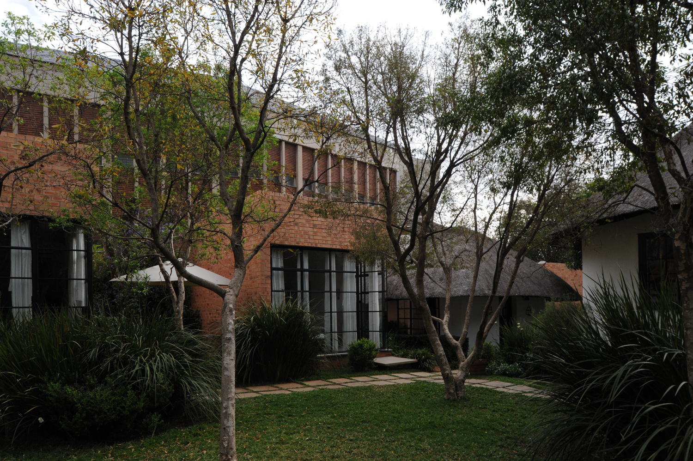
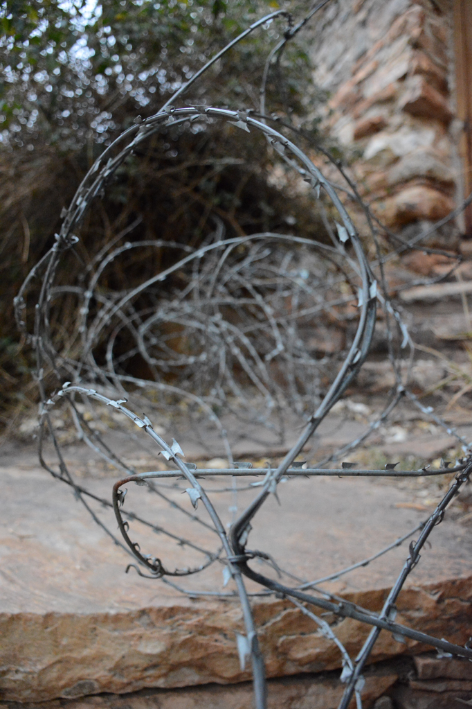
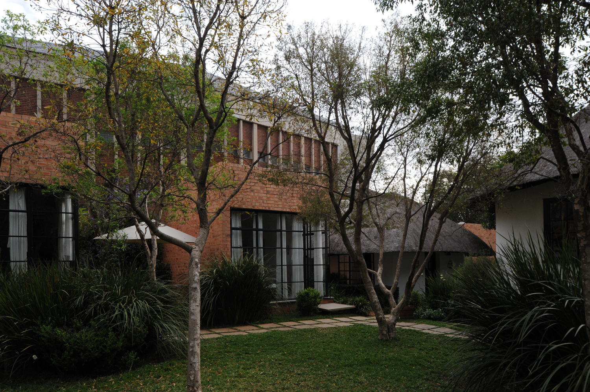
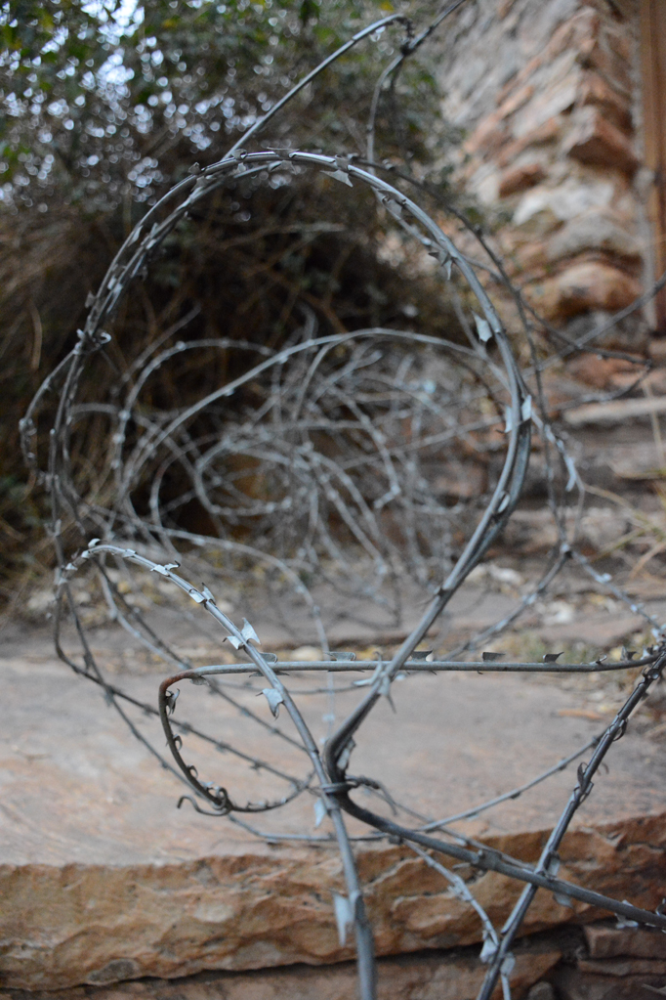

IDEA
SOUTH, the first in a series of 4 creative works around co-ordinated themes of imagined and real space in Johannesburg, South Africa, with contributions from artists, architects and authors. The series is envisaged as a way to think about the many Joburgs/Jozi’s/Egoli’s we inhabit. Crossing the city, the four works SOUTH, EAST, WEST and NORTH, will consider the productive spaces coalesced around a series of themes arising out of the core project out of which this series has emerged, the Rand Mines Properties Project from the 1970s. Constructed around a ‘Dream Map’, the project envisaged a radical modernist scheme for the redevelopment of ‘out mined’ land to the geographical South of the city. Concerned with filling what was treated as an empty space or ‘blank’ on the landscape, the interdisciplinary team of architects, photographers, landscape architects and planners imagined a future curiously shaped around ideas of newness in a space they called ‘The New South’. This imaginary vision was against the ideas of the time of apartheid’s buffer zones of segregation, mining, township (Soweto – the South Western township), and the white city of progress and modernity.
SOUTH
In thinking with / through / alongside/ against / and anew (sic), the creative research proposed for the SOUTH project seeks imaginative responses to the making and unmaking of the idea of City of Gold, across a range of possible genres – from photography to fiction, print making to mark making in the landscape, rethinking pasts and futures. If as is so often the case scientific and professional knowledges shape the intellectual landscape of Urban Studies in South Africa, this project hopes to privilege the creative, the imaginative, the unreal and locate performative aspects of the ‘urban humanities’ around the following themes: blank, unplanned, unbuilt, unJoburg (after China Miéville’s fictional ‘unLun Dun’), land/scape, Dream Map and JoziQuest.
METHODS AND SOURCES
The co-ordinate map above draws reference to the blank_Architecture, apartheid and after project’s ‘grid’ of thematic concepts that were used to develop a non-linear, non-temporal, non-biographic (great men, great works, great lives) and a-political ways in which histories of architecture, planning, urban design and landscape architecture are traditionally formulated. Our co-ordinate mapping is a loose set of relational positions adduced to thinking about the ways in which the city has come to have distinct co-ordinate identities – according value around social status, race, class and political ecologies of the city and its ‘world below’.
SOUTH is a project that also draws on Walter Benjamin’s ideas from The Arcades Project of the ‘convolute’ – envelopes of collected archival associations and fragments of life in the city of Paris. Similarly, the digital archive of the SOUTH uses this method to assemble its sources, reflections, documents and notes.
SOUTH is a curated project by Jonathan Cane, Noëleen Murray and Dorothee Kreutzfeldt.